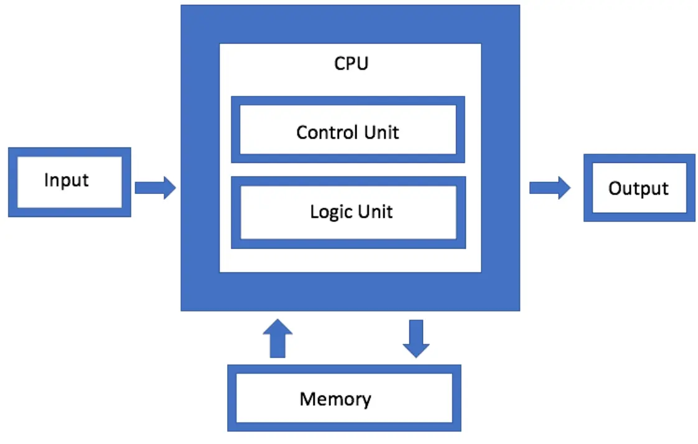

What is a System?
A system is a group of connected parts that work together to perform a specific task or achieve a specific purpose.
Example: A laptop is a computer system. Its processor, RAM, storage, operating system, applications, and other components work together to allow us to perform different tasks.
Information system
It is a combination of people, technology, data, and procedures that work together to collect and turn data into useful information.Example
A school information system can collect student information such as names, marks, attendance, and fees. It processes this data and provides useful information such as result cards, attendance reports, and student records.
Objective of a System
The objective of a system is the main purpose or goal that the system is designed to achieve. A system is created to perform specific tasks and produce useful results.
Examples of System Objectives
Different systems are designed for different purposes. For example:
- School Information System → To manage student records, marks, attendance, and fees.
- Banking System → To manage customer accounts, deposits, withdrawals, and transactions.
- Hospital Management System → To manage patient records, appointments, treatments, and billing.
- Library Management System → To manage books, members, borrowing, and returning of books.
- Online Shopping System → To allow customers to search, order, and pay for products online.
Components of a System
The components of a system are the different parts that work together to achieve the system's objective. A system normally has the following main components:
-
Input → The data or resources entered into the system.
- Example: Student names and marks entered into a school system.
-
Processing → The activities performed on the input to produce a useful result.
- Example: Calculating a student's total and percentage.
-
Output → The useful information or result produced by the system.
- Example: A student's result card.
-
Feedback → Information about the output that helps improve or control the system.
- Example: A teacher checks the result and corrects an incorrect mark.
System Environment
The system environment includes everything outside the system that interacts with or affects it. These external factors can influence how the system works and operates.
Simple Example: Online Shopping System
An online shopping system interacts with:
- Customers – Buy products.
- Delivery services – Deliver orders.
- Banks – Process payments.
- Internet – Allows users to access the system.
Communication also called System Communication
Communication between the different parts of a system is important for the system to work properly. It allows the components to share information and work together smoothly to achieve the system's goal.
Examples
- Computing System: The CPU communicates with memory to get and store data.
- Biological System: The brain sends signals to muscles to make the body move.
Software
Software is a set of programs and instructions that tells a computer what to do and how to perform different tasks. Unlike hardware, software cannot be physically touched.
Types of Software
There are two main types of software:
1. System Software
System software controls and manages the computer's hardware and provides a platform for other software to run.
Examples of System Software
-
Operating System (OS) – Manages the computer's hardware and provides an interface for users and applications.
Examples: Windows, Linux, macOS. -
Device Drivers (DD) – Help the operating system communicate with and control hardware devices.
Examples: Printer driver, graphics driver, keyboard driver. -
Utility Programs (UP) – Help maintain, protect, and manage the computer.
Examples: Disk Cleanup, antivirus software, backup tools.
2. Application Software
Application software is designed to help users perform specific tasks.
Examples of Application Software
- Microsoft Word → Writing documents
- Microsoft Excel → Working with data and calculations
- Web Browsers → Browsing the internet
- Media Players → Playing audio and video
- Graphic Design Software → Creating and editing images
System Software vs Application Software
| System Software | Application Software |
|---|---|
| It manages and controls the computer's hardware. | It helps users perform specific tasks. |
| It provides a platform for application software to run. | It runs on the system software. |
| It usually works in the background. | Users directly interact with it. |
| It is generally pre-installed with the computer or installed as part of the operating system. | It usually needs to be installed by the user according to their needs. |
| It is necessary for the basic operation of a computer. | It is used for specific user tasks. |
| Examples: Operating System, Device Drivers, Utility Programs. | Examples: MS Word, Excel, Web Browsers, Media Players. |
The Architecture of von Neumann Computers
Introduction
The von Neumann architecture is a basic design or model of a computer. It explains how the main parts of a computer work together to process data and instructions.
This model was developed in the 1940s and is named after John von Neumann, a mathematician and physicist who contributed to its development.
Diagram or Struture

Main Components
A von Neumann computer mainly consists of:
- Memory
- Central Processing Unit (CPU)
- Input Devices
- Output Devices
- System Bus
1. Memory
Memory stores the data and instructions that the CPU needs to perform tasks.
For example, when you open a program on your computer, it is loaded from the storage device into RAM (Random Access Memory). The CPU can access the program and its data from RAM quickly, allowing the program to run efficiently.
2. Central Processing Unit (CPU)
The CPU is the main processing part of the computer. It processes data and executes instructions stored in memory.
The CPU has two important components:
Arithmetic Logic Unit (ALU)
The ALU performs:
- Mathematical calculations, such as addition and subtraction.
- Logical operations, such as comparing values.
Example: When you calculate 2 + 2 in a calculator application, the ALU performs the calculation.
Control Unit (CU)
The Control Unit controls and coordinates the activities of the computer. It tells other components what to do and when to do it according to the instructions of the program.
Example: When calculating 2 + 2, the CU controls the process and makes sure the required data is obtained from memory and the ALU performs the calculation.
CU → Controls and coordinates the activities of the CPU.
3. Input Devices
Input devices allow users to enter data and instructions into the computer.
Examples include:
- Keyboard
- Mouse
- Microphone
- Scanner
Example: When you type your name using a keyboard, the keyboard sends the input to the computer for processing.
4. Output Devices
Output devices show or provide the results produced by the computer.
Examples include:
- Monitor
- Printer
- Speakers
Example: When the computer finishes processing some information, the result can be displayed on the monitor.
5. System Bus
A system bus is a communication pathway that allows the different components of a computer to exchange data, addresses, and control signals.
The system bus has three main parts:
Data Bus
The Data Bus carries the actual data between the CPU, memory, and other components.
Address Bus
The Address Bus carries information about where the data should be sent or where it should be retrieved from.
Control Bus
The Control Bus carries control signals that tell different components what actions to perform.
Working of von Neumann Architecture
The von Neumann architecture executes instructions using a step-by-step process called the Fetch–Decode–Execute–Store cycle.
The CPU mainly performs four stages:
- Fetching → Gets the instruction from memory.
- Decoding → Understands what the instruction means.
- Execution → Performs the required operation.
- Storing → Stores or displays the result.
Example: Adding Two Numbers
Suppose we use a calculator to calculate 2 + 2. The computer follows the four stages to produce the answer.
1. Fetching
Fetching means getting the next instruction from memory.
The Program Counter (PC) contains the address of the next instruction. The CPU uses this address to get the instruction from memory and places it in the Instruction Register (IR).
2. Decoding
Decoding means understanding the instruction that was fetched.
The Control Unit (CU) examines the instruction and determines what operation needs to be performed.
For example, the CPU understands that an addition operation is required.
3. Execution
Execution means performing the required operation.
The Arithmetic Logic Unit (ALU) performs mathematical and logical operations.
For example:
2 + 2 = 4
The ALU performs the addition and produces the result 4.
4. Storing
After execution, the result is stored in memory or sent to an output device.
For example, the result 4 can be displayed on the calculator screen.
Complete Process
Fetch → Decode → Execute → Store
| Stage | What Happens? |
|---|---|
| Fetch | Get the instruction from memory |
| Decode | Understand the instruction |
| Execute | Perform the required operation |
| Store | Store or display the result |
Example: 2 + 2
Fetch: Get the addition instruction
↓
Decode: Understand that addition is required
↓
Execute: ALU calculates 2 + 2 = 4
↓
Store: Result 4 is stored or displayed
Number System
A number system is a method of representing numbers using a specific set of digits or symbols. Different number systems use different numbers of digits, called the base or radix.
In computer science, the following four number systems are commonly used:
1. Decimal Number System
The Decimal Number System has a base of 10. It uses 10 digits from 0 to 9.
This is the number system that we normally use in our daily life.
Example: 25, 100, 458
2. Binary Number System
The Binary Number System has a base of 2. It uses only two digits: 0 and 1.
Computers use binary because electronic circuits can represent two basic states, such as ON and OFF. 0 means OFF and 1 means ON.
Example: 1010, 1101, 10001
3. Octal Number System
The Octal Number System has a base of 8. It uses eight digits from 0 to 7.
Example: 25, 147, 706
4. Hexadecimal Number System
The Hexadecimal Number System has a base of 16. It uses 16 symbols: 0–9 and A–F.
Here:
- A = 10
- B = 11
- C = 12
- D = 13
- E = 14
- F = 15
Hexadecimal is used in areas such as memory addresses, color codes, MAC addresses, and IPv6 addresses.
Example: 2A, FF, 1B
For example:
- Octal: 0 = 000, 1 = 001, 2 = 010, 3 = 011
- Hexadecimal: 0 = 0000, 1 = 0001, 2 = 0010, 3 = 0011
This makes it easier to convert binary numbers into octal and hexadecimal forms.
Decimal to Binary Conversion and Vice Versa
To convert a decimal number into binary, we repeatedly divide the number by 2 and record the remainders. The binary answer is obtained by reading the remainders from bottom to top.
Example: Convert 810 to Binary
Divide 8 by 2 repeatedly and write the remainders on the right:
2 | 8
2 | 4 - 0
2 | 2 - 0
2 | 1 - 0
Now read the remainders from bottom to top:
Therefore: 810 = 10002
Binary to Decimal
Now convert 10002 back to decimal:
1000₂
= (1 × 2³) + (0 × 2²) + (0 × 2¹) + (0 × 2⁰)
= 8 + 0 + 0 + 0
= 8₁₀
Therefore:
10002 = 810 ✅
Decimal to Binary Conversion Practice Questions
Basic Questions
- 510 = ?2
- 810 = ?2
- 1010 = ?2
- 1510 = ?2
- 2010 = ?2
- 2510 = ?2
4-Digit Decimal Numbers
- 102410 = ?2
- 120010 = ?2
- 126010 = ?2
- 150010 = ?2
- 200010 = ?2
- 409510 = ?2
Challenge Questions
- 34510 = ?2
- 51210 = ?2
- 99910 = ?2
- 204810 = ?2
Octal to Binary and Binary to Octal
The Octal Number System has a base of 8 and uses the digits 0 to 7.
The Binary Number System has a base of 2 and uses only 0 and 1.
The conversion between octal and binary is easy because:
To convert an octal number into binary, replace each octal digit with its 3-bit binary equivalent.
| Octal | Binary |
|---|---|
| 0 | 000 |
| 1 | 001 |
| 2 | 010 |
| 3 | 011 |
| 4 | 100 |
| 5 | 101 |
| 6 | 110 |
| 7 | 111 |
Example: Convert 58 to Binary
From the table:
58 = 1012
2 | 5
2 | 2 - 1
| 1 - 0
Example: Convert 258 to Binary
Convert each octal digit separately:
2 → 010
5 → 101
Therefore:
258 = 0101012
Leading zeros can be removed:
258 = 101012
2 | 2
2 | 1 - 0
But because 1 octal digit = 3 binary bits, we add a leading zero:
28 = 0102
2 | 5
2 | 2 - 1
| 1 - 0
Convert 0101012 to Octal
010₂
= (0 × 2²) + (1 × 2¹) + (0 × 2⁰)
= (0 × 4) + (1 × 2) + (0 × 1)
= 0 + 2 + 0
= 2₈
So:
0102 = 210
Since 2 is already an octal digit:
0102 = 28 ✅
101₂
= (1 × 2²) + (0 × 2¹) + (1 × 2⁰)
= (1 × 4) + (0 × 2) + (1 × 1)
= 4 + 0 + 1
= 5₈
Since 5 is already an octal digit:
1012 = 58 ✅Therefore: 0101012 = 258 ✅
Practice Questions: Octal ↔ Binary
A. Convert Octal to Binary
Convert the following octal numbers into binary:
- 38 = ?2
- 58 = ?2
- 78 = ?2
- 128 = ?2
- 258 = ?2
- 348 = ?2
- 478 = ?2
- 1058 = ?2
- 2468 = ?2
- 7258 = ?2
B. Convert Binary to Octal
Convert the following binary numbers into octal:
- 0112 = ?8
- 1012 = ?8
- 1102 = ?8
- 0101012 = ?8
- 0111002 = ?8
- 1001112 = ?8
- 1010102 = ?8
- 0011010112 = ?8
- 0101001102 = ?8
- 1111011012 = ?8
More Practice
- 112 = ?8
- 10012 = ?8
- 101102 = ?8
- 1101012 = ?8
- 10001112 = ?8
- 101001102 = ?8
- 1110100112 = ?8
Examples
11012 → 1 | 101 → 001 | 101
101012 → 10 | 101 → 010 | 101
Hexadecimal to Binary and Binary to Hexadecimal
The Hexadecimal Number System has a base of 16 and uses the digits 0–9 and the letters A–F.
The Binary Number System has a base of 2 and uses only 0 and 1.
The conversion between hexadecimal and binary is easy because:
Hexadecimal to Binary
To convert a hexadecimal number into binary, replace each hexadecimal digit with its 4-bit binary equivalent.
| Hexadecimal | Binary |
|---|---|
| 0 | 0000 |
| 1 | 0001 |
| 2 | 0010 |
| 3 | 0011 |
| 4 | 0100 |
| 5 | 0101 |
| 6 | 0110 |
| 7 | 0111 |
| 8 | 1000 |
| 9 | 1001 |
| A | 1010 |
| B | 1011 |
| C | 1100 |
| D | 1101 |
| E | 1110 |
| F | 1111 |
Example: Convert 516 to Binary
From the conversion table:
516 = 01012
We can also verify this by converting 5 into decimal and then binary:
2 | 5
2 | 2 - 1
| 1 - 0
Reading the remainders from bottom to top:
516 = 1012
But because 1 hexadecimal digit = 4 binary bits, we add a leading zero:
516 = 01012
Example: Convert 2A16 to Binary
Convert each hexadecimal digit separately:
2 → 0010
A → 1010
Therefore:
2A16 = 001010102
Leading zeros can be removed when they are not required:
2A16 = 1010102
Binary to Hexadecimal
To convert a binary number into hexadecimal, group the binary digits into groups of 4 bits from the right. Then replace each 4-bit group with its hexadecimal equivalent.
Convert 10102 to Hexadecimal
1010₂
= (1 × 2³) + (0 × 2²) + (1 × 2¹) + (0 × 2⁰)
= (1 × 8) + (0 × 4) + (1 × 2) + (0 × 1)
= 8 + 0 + 2 + 0
= 10₁₆
Since 10 in hexadecimal is represented by A:
10102 = A16 ✅
Convert 00102 to Hexadecimal
0010₂
= (0 × 2³) + (0 × 2²) + (1 × 2¹) + (0 × 2⁰)
= (0 × 8) + (0 × 4) + (1 × 2) + (0 × 1)
= 0 + 0 + 2 + 0
= 2₁₆
00102 = 216 ✅
Convert 001010102 to Hexadecimal
First, group the binary digits into groups of 4 from the right:
00101010₂
0010 | 1010
Now convert each group:
0010 → 2
1010 → A
Therefore:
001010102 = 2A16 ✅
More Grouping Examples
11012 → 1101 → D
Therefore: 11012 = D16
101012 → 1 | 0101 → 0001 | 0101
Therefore: 101012 = 1516
1101012 → 1101 | 0101
Therefore: 1101012 = D516
Practice Questions: Hexadecimal ↔ Binary
A. Convert Hexadecimal to Binary
Convert the following hexadecimal numbers into binary:
- 316 = ?2
- 516 = ?2
- A16 = ?2
- F16 = ?2
- 1216 = ?2
- 2A16 = ?2
- 3F16 = ?2
- 4B16 = ?2
- 7C16 = ?2
- AF16 = ?2
B. Convert Binary to Hexadecimal
Convert the following binary numbers into hexadecimal:
- 00112 = ?16
- 01012 = ?16
- 10102 = ?16
- 11112 = ?16
- 001010102 = ?16
- 001111112 = ?16
- 010010112 = ?16
- 011111002 = ?16
- 101011112 = ?16
- 110110102 = ?16
More Practice
- 11012 = ?16
- 101012 = ?16
- 1101012 = ?16
- 10001112 = ?16
- 101001102 = ?16
- 1110100112 = ?16
- 10110101102 = ?16
Examples of Binary Grouping
11012 → 1101 → D
101012 → 1 | 0101 → 0001 | 0101
1101012 → 1101 | 0101
10001112 → 1 | 0001 | 11 → 0001 | 0001 | 11
Decimal to Octal Conversion and Vice versa
To convert a decimal number into octal, divide the decimal number repeatedly by 8. Write the remainders and read them from bottom to top.
Example: Convert 2510 to Octal
8 | 25
8 | 3 - 1
| 0 - 3
Now read the remainders from bottom to top:
3 1
Therefore:
2510 = 318 ✅
Convert 318 to Decimal
Multiply each octal digit by its corresponding power of 8, starting from the right with 80:
31₈
= (3 × 8¹) + (1 × 8⁰)
= (3 × 8) + (1 × 1)
= 24 + 1
= 25₁₀
Therefore:
318 = 2510 ✅Practice Questions: Decimal ↔ Octal
A. Convert Decimal to Octal
Convert the following decimal numbers into octal:
- 810 = ?8
- 1510 = ?8
- 2510 = ?8
- 4010 = ?8
- 6410 = ?8
- 10010 = ?8
- 12510 = ?8
- 25010 = ?8
- 50010 = ?8
- 100010 = ?8
B. Convert Octal to Decimal
Convert the following octal numbers into decimal using the multiplication method:
- 78 = ?10
- 128 = ?10
- 258 = ?10
- 318 = ?10
- 458 = ?10
- 1008 = ?10
- 1258 = ?10
- 2508 = ?10
- 3458 = ?10
- 10008 = ?10
Trick to Solve Bigger Questions
Example: Convert 445510 to Octal
First divide 4455 by 8:
4455 ÷ 8 = 556.875
The whole-number quotient is 556 and the decimal part is 0.875.
Now find the remainder:
0.875 × 8 = 7
So the remainder is 7.
Then continue with 556:
556 ÷ 8 = 69.5
0.5 × 8 = 4
So the remainder is 4.
Continue:
69 ÷ 8 = 8.625
0.625 × 8 = 5
Remainder = 5
Continue:
8 ÷ 8 = 1
Remainder = 0
Finally:
1 ÷ 8 = 0.125
0.125 × 8 = 1
Remainder = 1
Now read the remainders from bottom to top:
1 → 0 → 5 → 4 → 7
Therefore:
445510 = 105478 ✅Data Representation in Computing Systems
Computers can store and process different types of information. To store this information, computers represent data using binary digits (0 and 1).
One important type of data is numeric data, which includes whole numbers and integers.
1. Whole Numbers (W)
Whole numbers are numbers that include zero and all positive numbers. They do not include negative numbers or fractions.
Mathematically:
W = {0, 1, 2, 3, 4, ...}
Examples
- Number of students = 50
- Age = 18
- Number of books = 25
These values cannot normally be negative.
Whole Number Storage
A byte consists of 8 bits. The more bytes used, the more values a computer can store.
For n bits, the maximum whole number is:
Maximum value = 2n − 1
| Storage | Bits | Maximum Value |
|---|---|---|
| 1 Byte | 8 bits | 28 − 1 = 255 |
| 2 Bytes | 16 bits | 216 − 1 = 65,535 |
| 4 Bytes | 32 bits | 232 − 1 = 4,294,967,295 |
For example, an 8-bit whole number can represent values from:
000000002 = 010
to
111111112 = 25510
2. Integers (Z)
Integers include positive numbers, negative numbers, and zero.
Mathematically:
Z = {..., −3, −2, −1, 0, 1, 2, 3, ...}
In computing, these are called signed integers because they can represent both positive and negative values.
Sign Bit
To represent positive and negative numbers, one bit is used as the sign bit. It is usually the most significant bit (MSB).
- 0 → Positive
- 1 → Negative
Example:
Binary Number: 1 0 1 1 0 1 0 1
↑ ↑
MSB LSB
(leftmost) (rightmost)
In 101101012:
- MSB = 1 → the leftmost bit.
- LSB = 1 → the rightmost bit.
For an 8-bit signed integer, one bit is used for the sign, leaving 7 bits for the value.
The maximum positive value is:
27 − 1 = 127
So, the maximum positive value is:
011111112 = 12710
Negative values are commonly stored using 2's complement.
1's Complement
1's complement is a method of representing signed binary numbers.
To find the 1's complement, simply invert every bit:
- 0 → 1
- 1 → 0
Example
Original: 00000101
1's complement: 11111010
So, the 1's complement of 000001012 is 111110102.
2's Complement
2's complement is the common method used by computers to represent negative integers.
To find the 2's complement:
- Invert all the bits to get the 1's complement.
- Add 1 to the result.
Example: Represent −5 in 8 Bits
First, write +5 in binary:
00000101
Step 1: Invert all bits
11111010
Step 2: Add 1
11111010
+ 00000001
-----------
11111011
Therefore:
−510 = 111110112 in 8-bit 2's complement.
5. Minimum Integer Value
For an n-bit signed integer, the minimum value is:
Minimum value = −2n−1
For an 8-bit integer:
−27 = −128
Therefore, an 8-bit signed integer can represent values from:
−128 to +127
Examples
| Storage | Bits | Minimum Value | Maximum Value |
|---|---|---|---|
| 1 Byte | 8 | −128 | 127 |
| 2 Bytes | 16 | −32,768 | 32,767 |
| 4 Bytes | 32 | −2,147,483,648 | 2,147,483,647 |
Binary Arithmetic
Binary arithmetic is the process of performing addition, subtraction, multiplication, and division using only 0 and 1.
1. Binary Addition
Rules
| Operation | Result |
|---|---|
| 0 + 0 | 0 |
| 0 + 1 | 1 |
| 1 + 0 | 1 |
| 1 + 1 | 10 |
| 1 + 1 + 1 | 11 |
Example 1
101
+ 011
-----
1000
1012 + 0112 = 10002
Example 2
1101
+ 0011
------
10000
11012 + 00112 = 100002
Example 3
10110
+ 01101
-------
100011
101102 + 011012 = 1000112
2. Binary Subtraction
Rules
| Operation | Result |
|---|---|
| 0 − 0 | 0 |
| 1 − 0 | 1 |
| 1 − 1 | 0 |
| 10 − 1 | 1 |
When 0 − 1 occurs, we borrow from the next position.
Example 1
1010
- 0011
------
0111
10102 − 00112 = 01112
Example 2
1101
- 0101
------
1000
11012 − 01012 = 10002
Example 3
10000
- 00111
-------
01001
100002 − 001112 = 010012
3. Binary Multiplication
Rules
| Operation | Result |
|---|---|
| 0 × 0 | 0 |
| 0 × 1 | 0 |
| 1 × 0 | 0 |
| 1 × 1 | 1 |
Example 1
101
× 10
-----
000
+ 1010
-----
1010
1012 × 102 = 10102
Example 2
101
× 11
-----
101
+ 1010
-----
1111
1012 × 112 = 11112
Example 3
110
× 101
-----
110
000
+ 11000
-----
11110
1102 × 1012 = 111102
4. Binary Division
Binary division follows the same basic process as decimal long division.
Example 1
10
______
10 ) 100
10
--
00
0
--
0
1002 ÷ 102 = 102
Example 2
11
______
10 ) 110
10
--
10
10
--
0
1102 ÷ 102 = 112
Example 3
101
_______
10 ) 1010
10
--
01
0
--
10
10
--
0
10102 ÷ 102 = 1012
Binary Subtraction Using 2's Complement
In binary arithmetic, subtraction can also be performed by adding the 2's complement of the subtrahend to the minuend.
Example: In 9 − 6, 9 is the minuend and 6 is the subtrahend.
Example: Subtract 6 from 9
Minuend = 910 = 10012
Subtrahend = 610 = 01102
Step 1: Find the 2's Complement of the Subtrahend
Subtrahend:
0110
Invert all the bits:
1001
Add 1:
1001
+ 0001
------
1010
Therefore, the 2's complement of 01102 is 10102.
Step 2: Add the Minuend and 2's Complement
1001
+ 1010
------
10011
Step 3: Discard the Carry Bit
The result is:
10011
↑
Carry
Discard the leftmost carry:
0011
00112 = 310
Therefore:
910 − 610 = 310 ✅or
10012 − 01102 = 00112 ✅Common Text Encoding Schemes
Computers store text as binary data (0s and 1s). Text encoding schemes convert letters, numbers, and symbols into a form that computers can understand and store.
1. ASCII
ASCII stands for American Standard Code for Information Interchange.
It uses 7 bits and represents 128 characters.
Example
When you type A, ASCII represents it as 65.
A → 65
2. Extended ASCII
Extended ASCII uses 8 bits and can represent up to 256 characters.
It includes additional symbols and special characters that are not included in standard ASCII.
Example
Some extended ASCII character sets can represent additional characters such as β (Greek beta) and other special symbols.
3. Unicode
Unicode is a character standard used to represent characters from different languages and writing systems.
Example
Unicode can represent English A, Urdu ب, Arabic ع, Chinese 中, and many other characters.
Common Unicode encoding formats are:
- UTF-8
- UTF-16
- UTF-32
UTF stands for Unicode Transformation Format.
4. UTF-8
UTF-8 is a variable-length encoding that uses 1 to 4 bytes for a character.
It is backward compatible with ASCII. This means that standard ASCII characters use the same byte values in UTF-8.
Examples
A → 01000001 → 1 byte
An Urdu character such as ب requires 2 bytes in UTF-8.
5. UTF-16
UTF-16 is a variable-length encoding that uses 2 or 4 bytes for a character.
Example
A → 00000000 01000001 → 2 bytes
Most commonly used characters require 2 bytes, while some characters require 4 bytes.
6. UTF-32
UTF-32 is a fixed-length encoding that uses exactly 4 bytes for every character.
Example
A → 00000000 00000000 00000000 01000001
Therefore, the character A takes 4 bytes in UTF-32.
Comparison of Text Encoding Schemes
| Encoding | Size | Characters / Purpose |
|---|---|---|
| ASCII | 7 bits | 128 characters |
| Extended ASCII | 8 bits | Up to 256 characters |
| Unicode | Character standard | Characters from many languages |
| UTF-8 | 1–4 bytes | Variable-length Unicode encoding |
| UTF-16 | 2–4 bytes | Variable-length Unicode encoding |
| UTF-32 | 4 bytes | Fixed-length Unicode encoding |
How Computers Store Files
Computers store all types of files, such as images, audio, videos, and documents, as binary data (0s and 1s).
Storage Devices
1. Hard Disk Drive (HDD)
A Hard Disk Drive (HDD) uses spinning disks to read and write data. It usually provides a large storage capacity.
2. Solid State Drive (SSD)
A Solid State Drive (SSD) uses flash memory to store data. It provides faster access and better performance than an HDD.
Example
When you save a photo on your laptop, the photo is converted into binary data and stored on the computer's HDD or SSD.
3. Cloud Storage
Cloud storage stores files on remote servers that can be accessed through the internet.
It is useful for backup and for accessing files from different devices.
Examples of Cloud Storage
- Google Drive
- OneDrive
- Dropbox
- iCloud
- Google Photos
Multiple Choice Questions (MCQs) on Introduction To Computational Systems
Test Yourself: Interactive MCQs (Introduction to Computational Systems)
FAQs
Introduction to Computational Systems FAQs
Here are answers to some common questions about computational systems, computer hardware and software, data and information, computational thinking, algorithms, flowcharts, networks, cybersecurity, and modern computing.
A computational system is a system that uses hardware, software, data, and processes to perform computational tasks and solve problems.
The main components include hardware, software, data, users, and procedures that work together to perform tasks.
Hardware refers to the physical parts of a computer system that can be seen and touched, such as the keyboard, monitor, processor, and storage devices.
Software is a collection of programs and instructions that tells a computer how to perform specific tasks.
Hardware consists of the physical components of a computer, while software consists of the programs and instructions that operate the hardware.
Data is a collection of raw facts and figures that can be processed by a computer to produce meaningful information.
Information is processed and organized data that has meaning and can be used for decision-making.
The CPU, or Central Processing Unit, is the main processing component of a computer. It executes instructions and performs calculations.
An algorithm is a clear, step-by-step set of instructions used to solve a problem or perform a specific task.
Computational thinking is a problem-solving approach that uses techniques such as decomposition, pattern recognition, abstraction, and algorithms.
Decomposition is the process of breaking a complex problem into smaller and more manageable parts.
Pattern recognition is the process of identifying similarities, differences, or repeated patterns in problems or data.
Abstraction means focusing on the important features of a problem while ignoring unnecessary details.
A flowchart is a graphical representation of an algorithm or process using standard symbols and arrows.
A flowchart helps visualize the steps of a process or algorithm, making it easier to understand, analyze, and communicate.
A programming language is a formal language used by programmers to write instructions that computers can execute.
A computer network is a group of computers and other devices connected together to communicate and share data and resources.
Cybersecurity is the practice of protecting computers, networks, systems, and data from unauthorized access, attacks, and other digital threats.
Computational systems are important because they help people process information, solve problems, automate tasks, communicate, and perform complex operations efficiently.
Input is the data or instructions provided to a computer, while output is the information or result produced after processing the input.